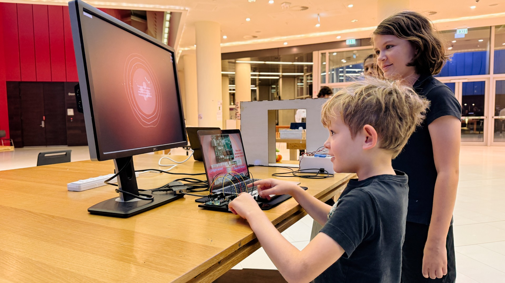

Aura
Representing presence without metrics

Most consumer products quantify experience. They measure steps, time, attention, and productivity, often flattening lived experience into metrics that invite comparison and optimization.
For many users, this creates fatigue rather than insight.
The problem is not lack of data.
It’s too much interpretation imposed too early.
The constraint space
- Avoid numbers, scores, and dashboards entirely
- Remain legible without instructions or onboarding
- Operate quietly without demanding attention
- Be physically present but digitally scalable
The key decision
I chose intentional ambiguity over interpretive authority.
Rather than telling users what their data “means,” Aura reflects environmental signals in a way that invites interpretation rather than conclusions.
The system observes. It does not judge.
System description
Aura is a small ambient object designed for desks or walls that translates environmental cues into slow, evolving visuals.
Inputs:
- Light
- Sound
- Proximity
Processing:
- Sensor data is smoothed and abstracted
- Changes affect generative visual behavior rather than discrete states
Outputs:
- Only atmosphere. No alerts, metrics, or goals
The object behaves like a quiet companion rather than a smart device.
Trade-offs and failure modes
- Some users found the experience unclear or “too vague”
- The product resists immediate usefulness
- It does not scale well for productivity-oriented users
These were deliberate exclusions. Aura is designed for people who opt out of quantified self culture.
Outcomes
User responses clustered into two groups:
- Users who found the experience calming and reflective
- Users who felt unsettled by the lack of explicit feedback
Both responses validated the core premise: ambiguity can deepen engagement when it is intentional.
Real-world viability
Aura is conceived as a low-energy, low-cost ambient product:
- Desk object
- Wall-mounted frame
- Quiet spaces such as homes, studios, or libraries
It does not compete with smart home devices. It complements them by doing less.
Key takeaways
- Design products that refuse optimization pressure
- Balance physical and digital systems
- Use restraint as a design strategy, not a limitation